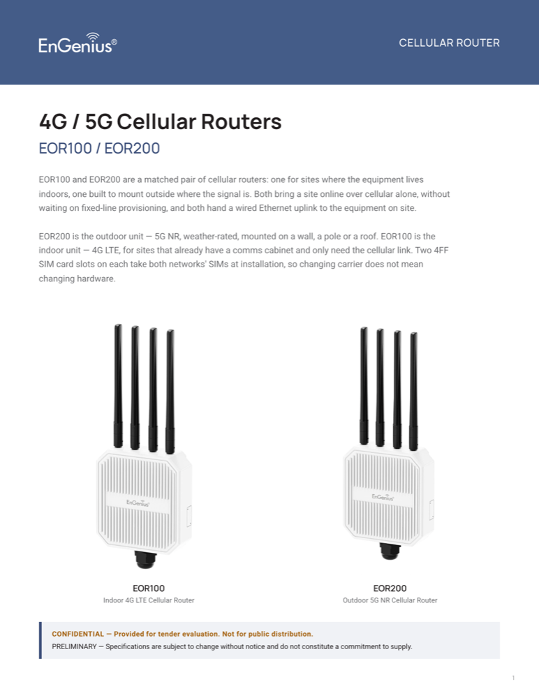
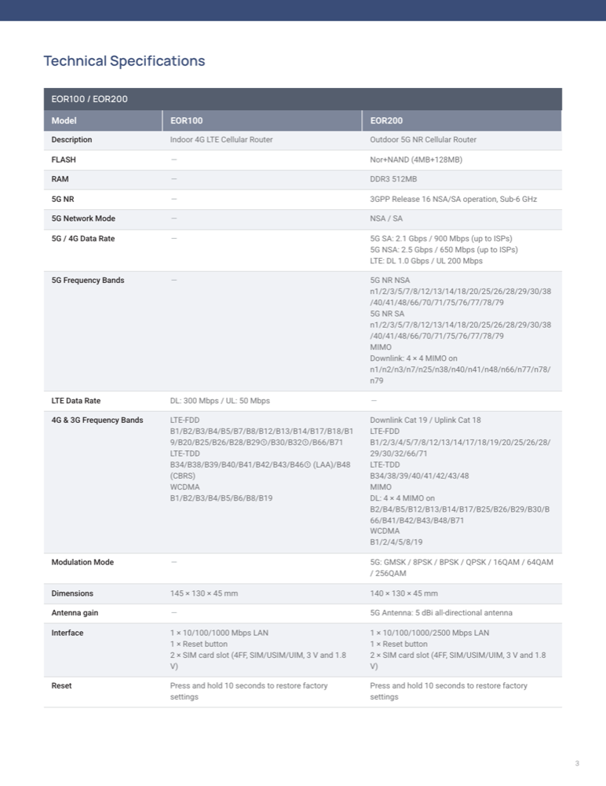
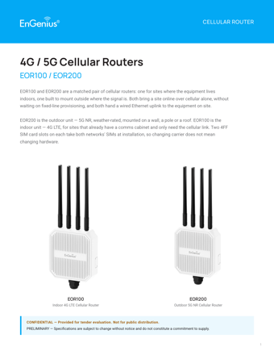
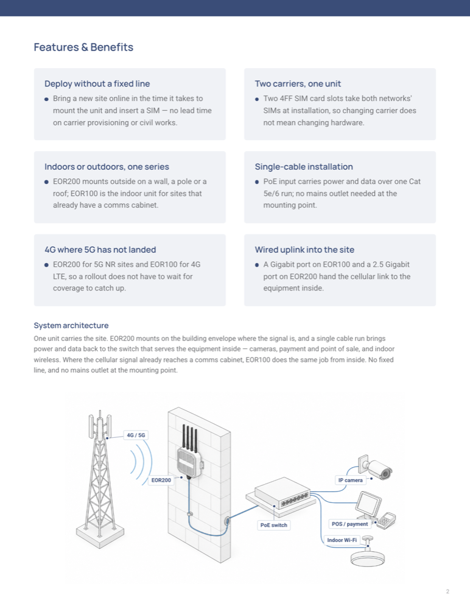
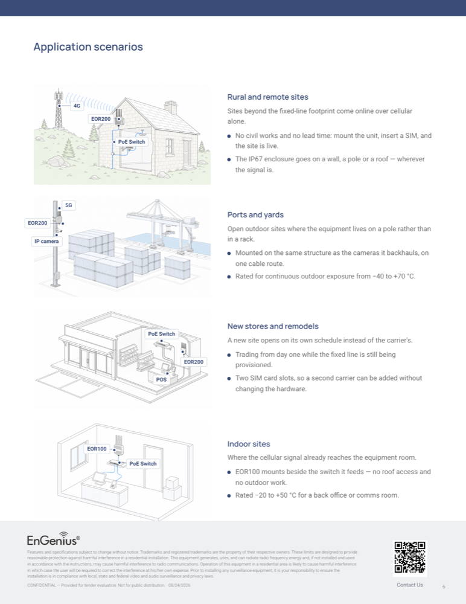

A
外購
這條產品線我們沒有貨，但案子要。找 ODM 或他牌拿規格書，換成我們的命名、照片和版型去談。
- 起點
- 上傳原廠 PDF / Excel，或直接貼上規格文字
- 你下的規則等於什麼
- 拿到案子後要請 ODM 改的硬體變更清單。不是「我們對規格表的修飾」——所以每一條都要問得出「做不做得到、多少錢」。
實例 EOR100 / EOR200 — 馬來西亞連鎖便利店，4G/5G 戶外路由器
給「我們目錄裡沒有現成答案」的標案，做一份掛 EnGenius 名字的暫定規格書。可以從外購廠商的規格書起頭，也可以從我們自己已經在賣的型號延伸。
第一分鐘就要決定，而且決定錯了要重來。
差別只在「規格從哪裡來」，後面的流程是同一條。
這條產品線我們沒有貨，但案子要。找 ODM 或他牌拿規格書，換成我們的命名、照片和版型去談。
實例 EOR100 / EOR200 — 馬來西亞連鎖便利店，4G/5G 戶外路由器
這台我們有在賣，但公開的 datasheet 寫得不夠深，而標案偏偏在評那些欄位。
實例 ECW215 — 帶入 45 列規格再往下補
同一個標案要同時報自家型號和外購型號，放在一張規格表上並排比。
覆蓋前系統會跳紅框警告，並告訴你會失去哪些檢查
從建檔到產生 PDF，八步。中間只有一個地方會分岔。
填文件名稱、客戶、分公司。分公司和業務負責人這類欄位只給我們自己看，PDF 上完全不會出現。
Tender Datasheets → 新增標案 datasheet
一台型號就是規格表上的一欄。這一步是整個流程唯一的分岔，選單上的三顆按鈕就是三條路。
建好欄位後直接帶你到上傳框。傳 PDF / Excel 或貼上文字，逐條抄成規格列，抄完先給你預覽，確認才寫進去。
用到 AI從產品目錄挑一台，規格、文案、產品圖一起複製過來。純資料搬運，不經過 AI。
封面那幾格（主標、副標、分類、Overview、Features）也會一起帶進來，但只填空的——加第二台不會蓋掉你為第一台寫的字。那是我們自己寫過、核過的英文，改起來比從空白開始快。
第三顆「加空白型號」是規格要自己手打的時候用的
把業務給的那段話原封貼上，系統拆成「哪些是可以直接改的規則、哪些是要問人的問題」。它只提案，勾了才生效。
狀態與待辦 → 貼上業務需求
用到 AI隱藏不想印的列、改值、新增原廠沒有的規格、指定新增的列排在哪。原廠那一格永遠留著，所以隨時看得出哪些是我們改的。
規格與型號 → ② 只有〈型號〉的調整
系統逐格比對，列出缺什麼、哪裡可疑、哪裡危險。真正的產出是一段可以直接貼給業務／RD／ODM 的澄清訊息——因為能回答的人都不在這個系統裡。
狀態與待辦 → 還缺什麼
主標、overview、Features & Benefits、產品照、應用情境圖。圖片可以點上標籤指到設備，文字自己拖到空白處——編輯器上看到的位置和大小就是印出來的。
情境圖旁邊那幾段文字（小標、引言、列點）是每張圖各自的，在縮圖底下的「改文字／標註」裡改。不知道要寫什麼的話，「用 AI 起草情境文案」填一個產業就會起草——它只准引用這份文件規格表上有的東西，沒有規格依據的句子會標成橘色。
封面那幾格如果是空的（從廠商規格書建的文件都是），底下有「用 AI 起草封面文案」——從規格表寫出主標、Overview 和賣點，一格一格填。
封面與文案 · 各型號的產品圖
按 Print / Save as PDF。每按一次就自動存一版快照，之後改了規格也不會動到已經存檔的版本，所以隨時查得到客戶手上那份寫了什麼。
預覽頁右上角
要所有會讓文件出錯的項目都處理完才切得過去。沒處理完不會擋你出 PDF——只會在列印列上告訴你還剩幾項。
內部資訊 → 文件狀態
同一份文件，從一疊原廠 PDF 到可以寄出去。
這是站上真的存在的那份（EOR100 / EOR200 — Cellular Routers，馬來西亞連鎖便利店案）。 下面每一張圖都是它現在印出來的樣子。第一次用的話，照這個順序走一遍最快。
外購來的 4G 和 5G CPE。從廠商規格書建立 各建一欄， AI 逐條抄成規格列——抄完先給你逐列比對頁碼，確認才寫進去。
Tender Datasheets → 新增標案 datasheet
這份最大的收穫發生在這一步：翻原廠 PDF 才發現兩台的產品定位根本不同—— 5G 那份標題就是 Outdoor CPE、IP66、工作溫度 −40~+70 °C； 4G 那份自述是可攜式室內裝置，整份沒有防護等級、溫度只有 −20~+50 °C。 兩份 PDF 都沒有出現 "indoor" 這個字，那是我們自己加的。
文件因此改寫成「一個系列、兩種放置」：EOR100 室內 4G、EOR200 戶外 5G。 而這個對比本來看不到——我們自己下的一條規則把兩台的溫度都覆蓋成 −40~+70， 把 EOR100 的真值蓋掉了。移除那條規則之後，規格表自己就證明了室內／室外的分別。
其中一個是真的會出事的：EOR100 標 18 W 卻掛 802.3af——af 上限只有 15.4 W， 客戶接 af 的 switch 會供不上電。這種東西不是「文件不完整」，是「文件會害人買錯」。 把澄清訊息複製起來寄給 ODM，回覆再貼回系統。
狀態與待辦 → 還缺什麼
從廠商規格書建的文件沒有 EnGenius 文案可以帶，所以這一步是空的。 用 AI 起草封面文案 會從規格表寫出主標、Overview、賣點和架構圖說明， 一格一格填，不會自動存檔。
要看的是每一點後面標的依據。寫「沒有規格依據，自己確認」的那幾句是說法不是規格。 這份文件曾經寫過「a second carrier stands by, protecting payment when one network degrades」—— 通順、合理、而且描述的是原廠從沒宣稱過的自動切換。它撐過好幾輪校稿，最後是用手拔掉的。
封面與文案
順序是反過來的——文案先寫，因為它告訴你要畫什麼。 用 AI 起草情境文案 填一個產業（retail、港口物流…）產出四段， 複製其中一段的場景描述，貼進 複製提示詞 那個面板， 拿去自己的圖像工具產圖，再回來 上傳圖片。
圖上刻意不畫任何文字（圖像模型會把 802.3af/at 這種標籤畫成錯字）， 所有標籤是點在圖上、由版型用真字型排的——所以改得動，之後也能翻譯。
每按一次 Print / Save as PDF 就自動存一版當下的完整內容， 所以之後查得到「客戶手上那份寫了什麼」。列印刻意不動狀態——你必須能印草稿自己校對。 五個 blocking 都答完之後才標得了 文件狀態 的可以送出。


五種配色，同一套骨架。挑的是「這份文件看起來像哪一條產品線」。
版型只換顏色，不換結構——頁數、欄位、規格表的排法都一樣。 預設是鋼藍，因為那是目錄裡唯一一份多機種比較文件（Broadband EOC 系列）的配色， 所以一份兩欄的標案表用鋼藍會讀起來像對的那一類 EnGenius 文件，而不只是對的品牌。
戶外／寬頻。預設值。

雲端管理類。企業識別的那個藍。
戶外子品牌。EOR 那份用的就是這個。
機房／伺服器類。最深的那個藍。
非網管／中性。不想暗示產品線時用。
npm run check:guide-layouts 比對——新增版型或改了顏色卻沒更新這頁，CI 會擋下來。
第 2 頁回答「跟什麼接在一起」，規格表後面那頁回答「裝在哪裡」。
兩頁都放圖，但它們是兩種主張，所以欄位也是分開的。 這兩頁曾經共用同一組欄位，分家之後有一版把「System architecture」印在了場域頁上。


802.3af/at 這種標籤畫成看起來像字的亂碼，
印在客戶看的文件上就是我們的錯字。所以圖一律留白，
標籤是點在圖上、由版型用真字型排的——改得動、能翻譯、也不會糊。
同一個動作，在 A 和 B 兩條路上的嚴重程度是相反的。
| 你做了什麼 | A · 外購來源 | B · 目錄來源 |
|---|---|---|
| 補一條原廠規格表沒有的規格 | 擋住 等於要請 ODM 做出來，要先確認做得到、多少錢 |
提醒 標案要的就是這個。確認數字有依據就好 |
| 改動一格既有的值 | 提醒 會列出你改掉了什麼，確認依據 |
擋住 你改了客戶可以在官網並排比對的數字 |
| 規格自己互相矛盾 | 擋住 例如標 18 W 卻寫 802.3af——上限只有 15.4 W，客戶照文件買 af 的 switch 去接，現場就會出事 |
|
| 說好要拿掉的東西又冒出來 | 擋住 Wi-Fi 那幾列隱藏了，但 overview 還寫著「轉成 Ethernet 和 WiFi 訊號」 |
|
| 格子還沒填 | 提醒 暫定規格書的正常狀態，TBD 是誠實的 |
|
-20 ~ +50 °C 和 Operating: -40 ~ +70 °C
一看就是同一種東西）。**這一段不用 AI**，跟其他檢查一樣是寫死的規則。
五個地方，而且每一個的責任邊界都不一樣。
| 步驟 | 它負責判斷什麼 | 它不決定什麼 | 你要看的是 |
|---|---|---|---|
| 讀原廠規格書 只有「從廠商規格書建立」 | 哪幾行是同一列規格、跨頁的表格怎麼接、哪一欄是規格名哪一欄是值。不准改任何一個字——原廠寫錯字也照抄。 | 不判斷數字對不對、合不合理、能不能做到。 | 套用前的預覽。逐列比對頁碼，特別看它標「判讀把握度不高」的那幾列。 |
| 解析業務需求 兩條路都會 | 把一段話拆開，分成「這句可以直接變成規則」和「這句要問人才知道」。會辨認出哪些是覆蓋既有值（那種預設不勾）。 | 不判斷業務講的對不對，也不會替你決定要不要照做。 | 勾選清單。標成「會取代原本的值」的項目預設不勾，那是刻意的——確認過再勾。 |
| 把答覆轉成規則 兩條路都會 | 你在缺漏檢查裡回一句話，它推論這句話要改哪幾格、改成什麼。 | 不驗證你講的是不是事實。只是確認（「對，就是 IP67」）就不會有任何改動。 | 它提案的那幾格。改動會直接反映在規格表上，改錯了規則欄可以再改回來。 |
| 起草封面文案 只有「從廠商規格書建立」需要 | 從規格表寫出主標、分類、Overview、Features & Benefits，還有第 2 頁架構圖旁邊那段。刻意不給它看原廠的敘述文字——那段話常常寫著規格表沒有的東西（「waterproof level is up to IP66」），給了等於請它把廠商的行銷話術洗成我們的。 | 不准講規格表上沒有的東西。撐不起來的說法會列在下面說「這句沒寫，原因是缺哪一條」——那份清單通常比文案本身有用，它就是你要回頭去跟原廠要的東西。 | Overview 的字數（超過 500 字封面會裁掉），以及每一點的依據。一格一格填，不會自動存檔。 |
| 起草情境文案 兩條路都會 | 填一個產業，寫出情境圖旁邊的小標、引言和列點。它拿到的是這份文件算好的規格表，只准講表上有的東西。 | 不准講規格表上沒有的數字、頻段、等級或能力——兩張 SIM 卡就只是兩張 SIM 卡，不是自動切換。撐不起來的場域它會列出來說不寫。 | 每一點後面標的依據。寫「沒有規格依據，自己確認」的那幾句是說法不是規格，先看那幾句。 |
Deploy in Demanding Outdoor Conditions
・The EOR200 carries an IP67 ingress rating and operates across −40 °C to +70 °C. 依規格：IP Rating (EOR200)
・Mounts on the pole the site already has. 沒有規格依據，自己確認
「已經出過 PDF」和「可以送出去」是兩件事。
| 文件狀態 | PDF 紀錄 | |
|---|---|---|
| 回答什麼 | 這份文件能不能送出去 | 實際產生過幾份 PDF、什麼時候、誰做的 |
| 誰決定 | 你手動切，而且要缺漏檢查清零才切得過去 | 按列印按鈕自動記，不用管 |
| 列印會不會改到它 | 不會。你必須能把草稿印出來自己校對 | 會，每按一次多一版 |
一列一份文件，六個欄位各自回答一個問題。
| 分公司 | 文件 | 狀態 | 架構圖 | 情境圖 | 最後產生的 PDF | PDF 現況 |
|---|---|---|---|---|---|---|
| APAC | EOR100 / EOR200 — Cellular Routers | 可以送出 | 4 | 2026/08/21 第 2 版 | 產生後又改過 | |
| 新案（草稿） | 草稿 | — | 還沒產生過 | — | ||
| EMEA | 某某標案 | 草稿 | 3 | 2026/08/20 第 1 版 | 已是最新 |
—，因為沒有新舊可言。
「架構圖」是有或沒有（第 2 頁那張），「情境圖」是張數。
措辭可以改，存在與否不行。
封面一定會有一行說明規格可能還會變、不構成供貨承諾。PDF 檔名裡也會帶著——因為檔案會被轉寄，而檔名是沒有封面也還跟著走的東西。
產品圖下方固定帶註記。借用別台照片的時候，圖說要寫明拍的是哪一台——代換不是問題，默默代換才是。
這裡的型號不會同步、不會被 EnGenie 索引、沒有升格成產品的路徑。一台只報過價的型號進了產品表，EnGenie 就會開始跟人說我們有賣它。
刪除和封存不是同一件事。
沒出過圖的文件可以直接刪除——這個系統以外沒有人知道它存在過。出過圖的只能封存，因為刪除會連同「客戶手上那份長什麼樣」的存檔一起消失，而那正是那份紀錄最有價值的時候。封存隨時可以取消。
症狀 → 真正的原因。這幾條都是實際發生過的。
| 看到的 | 為什麼 | 怎麼辦 |
|---|---|---|
| 帶入型號之後，封面那幾格還是空的 | 編輯頁在你按下去之前就載好了，那幾格只在載入那一次讀資料。 | 重新整理頁面。而且先不要按儲存——那會把空值寫回去。已修，但開著的舊分頁還會遇到。 |
| 圖傳了，PDF 裡沒有 | 「要印哪些頁」裡的應用情境圖沒有勾。 | 編輯頁會直接跳出提示，按「幫我勾起來」。 |
| 標不了「可以送出」 | 還有 blocking 的問題沒有處理。草稿印得出來，送出去要守門。 | 還缺什麼 把紅色那幾項答掉或標成不適用。列印列會顯示還剩幾項。 |
| 情境圖旁邊那幾段文字找不到地方改 | 它在每張縮圖底下，屬於那一張圖，不是文件層級的欄位。 | 縮圖底下的 改文字／標註。縮圖上會顯示該圖的小標，沒寫的標成橘色。 |
| 改了規則，規格表沒有變 | 規則是綁在規格的標籤上的。標籤被改過或重抽過，那條規則就沒有對象了。 | 編輯頁會把這種規則列成「孤兒」。它不會默默吃掉——看到就是要處理。 |
| 新增的規格列永遠排在最後面 | 沒有指定位置。 | 用 + 標籤 @first = 值 或 + 標籤 @after 某列 = 值。
位置寫在標籤後面，不要寫進值裡——寫進值裡會印在客戶看的規格表上。 |
| 兩家廠商的規格表對不起來——溫度出現兩次、尺寸出現兩次，每列各半空 |
規格列是用標籤合併的。一家寫 Operating Temperature、
另一家寫 Enclosure，對工具來說就是兩件事。
加進既有型號時更明顯，因為我們自己的標籤是另一套體系。
|
缺漏檢查會把它們配成一組，按 合併成一列（留「〈欄位名〉」）。 值原樣搬過去、不改字；猜錯邊按「換一邊」。 |
| 上傳原廠 PDF 之後什麼都沒抽到 | 那份是掃描的（整頁是圖，沒有文字層）。 | 系統會明講抽不到，不會假裝成功。跟原廠要可複製文字的版本，或貼文字進去。 |
| 列表上寫「產生後又改過」 | 不是錯誤。它在說客戶信箱裡那份已經不等於現在這份。 | 要嘛重新出一次 PDF，要嘛確認那次改動不影響已寄出的內容。 |
四件會在客戶端出事的。
從既有型號帶入之後改動原本的規格值，會被標成最尖銳的那一類 finding—— 因為客戶可以把我們的公開 datasheet 拿來並排比對。要改就要有理由，而且要說得出口。
這裡的東西不同步、不進知識庫、不會出現在目錄。沒有升格成產品的路徑，而且永遠不會有—— 一台只報過價的型號進了產品表，EnGenie 就會開始跟客戶說我們有賣它。
兩張 SIM 卡就是兩張 SIM 卡，不是自動切換；DC 輸入不是電池備援；乙太網孔不是 PoE。 AI 起草會擋這個，但你自己打字時不會有人擋你。
已經從既有型號帶入的欄位再套用原廠抽取，缺漏檢查的判斷方向會整個翻轉。 覆蓋前會跳警告，那個警告不是形式。文件層級混著放沒問題，型號層級才互斥。
六條。花兩分鐘，比事後解釋便宜。
先寫出來，才不會被當成 bug。
| 做不到 | 現在怎麼繞 |
|---|---|
| 讀掃描版 PDF | 沒有文字層就抽不到。會明講，不會靜靜失敗。跟原廠要電子版，或貼文字。 |
| 直接在規格表上改值 | 目前改值要打規則（標籤 = 新值）。表格會逐格標出來源／改過／新增，
但編輯本身還是文字語法。已知不直覺，在排下一步。 |
| 把某一列拖到別的位置 | 順序是「合併各欄、各自保持相對順序」，再加 @first / @after 微調。沒有拖拉。 |
| 在後台直接產圖 | 後台只組提示詞，產圖在你自己的工具裡。一張要三到八分鐘， 而且看到結果才知道要改哪裡——那個來回在你手邊比在佇列裡快。 |
| 抓出所有殘留的規格 | 隱藏某項規格之後的殘留掃描，只比對代碼型的字眼（IP67、802.3at）。 溫度、天線數這類要更聰明的比對，目前靠人看。 |
| 多語言 | 標案 datasheet 只有英文。目錄那邊的四語系機制不套用在這裡。 |
這頁用了一些只有這個工具在用的說法。
| 說法 | 意思 |
|---|---|
| 原廠原文 | 從原廠規格書逐條抄下來、一個字都沒改的那份。它是不動的，你的修改是疊在上面的規則。 |
| 規則 | 你對某一列規格下的指令：隱藏、改值、標成不適用、新增一列。規格表 = 原文 ⊕ 規則，每次算出來，不存檔。 |
| 孤兒規則 | 找不到對象的規則（標籤被改過或重抽過）。會被列出來要你處理，不會默默失效。 |
| blocking | 缺漏檢查裡的紅色。分界是「這份文件會不會寫錯」，不是「缺多少」——十幾格 TBD 不擋，一個沒有來源的 IP67 會擋。 |
| 依據 | AI 寫的每一點後面標的那條規格列名。標「沒有規格依據」的是說法不是規格，要人確認。 |
| 出圖版次 | 按過幾次列印。每按一次存一版當下的完整內容，之後查得到客戶手上那份寫了什麼。 |
| 文件狀態 | 草稿／可以送出／已封存。跟出圖是兩個軸——草稿也印得出來，那是刻意的。 |